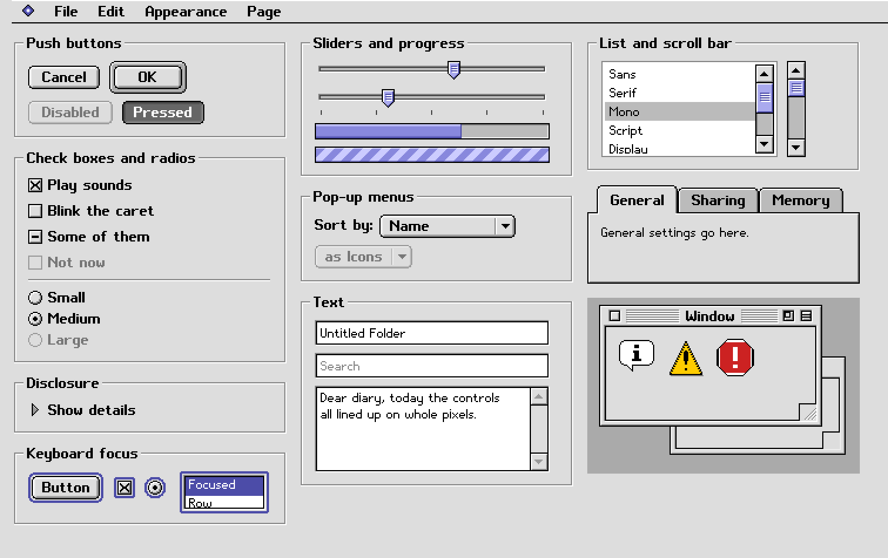
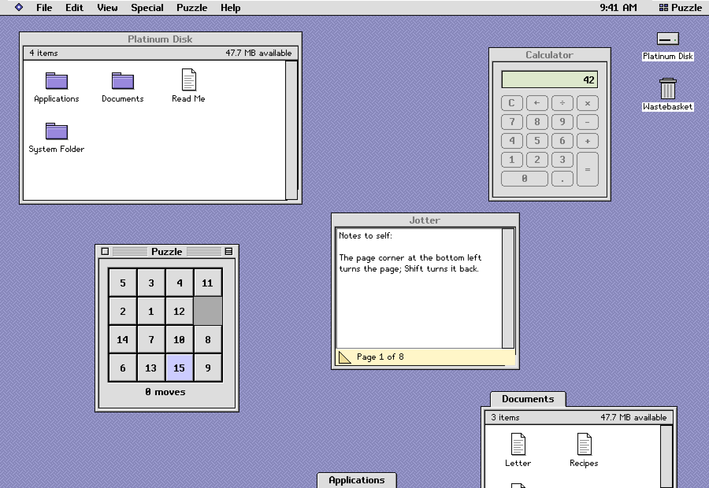

Platinum
Classic desktop controls for Rust & GPUI
Windows, menus, buttons, lists and dialogs in the gray, beveled style of late-1990s desktops. Native Rust components, drawn pixel by pixel through GPUI.
- Language
- Needs
- Rust 2024 · gpui-fast
9690cf8 - License
- MIT · bitmap font licenses included
- Source
- README & source guide
cargo run --example galleryRun the examples locally. The gallery below shows this GPUI implementation.
The component families, arranged across five pages of the native gallery.


A whole desktop in one GPUI window: a virtual disk, movable windows, a calculator, notes, rich text, a spreadsheet and control panels.


cargo run --example desktop
The example's files live in its own in-memory disk. The component library does not replace the operating system's desktop.
Initialize once, keep stateful controls as GPUI entities, and build lightweight controls from application state.
gpui_platinum::init(cx);
let field = cx.new(|cx| {
TextField::new(cx)
.label("Name")
.size(220., 22.)
});
button("save", "Save")
.default_button()
.on_click(cx.listener(Self::save))Use the same pinned GPUI revision throughout the application. The API is evolving in 0.x.
Documentation
- English overview
- 简体中文介绍
- API guideState, events, focus and localization.
- Design specificationThe gray ramp, metrics and control behavior.
- Example sourceA native desktop built from the controls.
cargo doc --no-deps --open
Generate the Rust reference from the checked-out source.